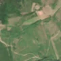
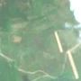

3,0 ha de pădure schimbată lângă Husasău de Criș
Între vara lui 2025 și 25 aprilie 2026, pe aproximativ 3,0 ha de pădure din comuna Ineu, lângă Husasău de Criș, județul Bihor, imaginile Sentinel-2 arată că vegetația a dispărut sau s-a schimbat puternic. E o schimbare care merită verificată.
Autorizația de tăiere
de confirmat pe poze
N-am găsit o autorizație care să acopere zona, dar nu putem spune ce s-a întâmplat aici: analistul AI fie n-a văzut încă pozele, fie le-a văzut și nu e sigur. Nu dăm roșu pe o bănuială, și nici nu spunem că e în regulă. Analistul înclină spre altceva decât o tăiere, dar nu e sigur. Printre astfel de zone au fost și tăieri reale.
Ce se vede în poze: În poza «după», zona marcată arată aproape la fel ca în «înainte»: nu se vede un teren gol întins cu margini clare, doar o mică pată deschisă la culoare. Și în poza detaliată zona are un amestec de copaci și vegetație tânără, deci nu pare o tăiere rasă dintr-o pădure deasă.


Înainte și după: Copernicus Sentinel-2, 10 m pe pixel, conturul zonei cu portocaliu. Poza detaliată (Esri World Imagery) e de acum 1–4 ani: arată ce era acolo înainte, nu tăierea.
Pe scurt
- Identificator
- 20260425_47116_22070
- Locul
- Husasău de Criș, comuna Ineu, județul Bihor (SIRUTA 29724)
- Coordonate (centru)
- 47.11565, 22.07049 · Google Maps · OpenStreetMap
- Suprafața
- 3,0 ha (din pixeli de 10 m; ± câțiva pixeli pe margine)
- Pădurea întreagă
- în vara lui 2025 (de atunci, nori sau iarnă)
- Prima imagine cu schimbarea
- 25 aprilie 2026
- Imagini în care se vede schimbarea
- 5
- Cât de sigur e semnalul din satelit
- medie
- Autorizația cea mai apropiată
- APV 2500153300500 · Ocolul Silvic Oradea, valabilă 18 iunie 2025 – 29 august 2025, la 93 m de zonă
- Terenul
- în afara amenajamentelor silvice publicate (pășune, mal de apă sau pădure privată fără amenajament în registru)
- Pădure pierdută în jur, alți ani
- 2001, 2005 (Hansen)
- Garda Forestieră
- Oradea
Dacă vrei să verifici sau să sesizezi
- Pădurile din județul Bihor sunt în grija Gărzii Forestiere Oradea, care controlează tăierile și dă amenzile.
- Autorizația găsită în zonă e emisă de Ocolul Silvic Oradea.
- Formularul Gărzii Forestiere Naționale primește sesizări și fără nume. Trimite linkul acestei pagini, coordonatele și pozele. Dacă tăierea e în desfășurare, sună la 112.
- Autorizațiile și transporturile de lemn se pot căuta în Inspectorul Pădurii.
Pagina arată ce se vede din satelit și ce scrie în registrul public; nu e o dovadă în sine.
Cum citezi zona
Linkul acestei pagini nu se schimbă. Dacă zona iese vreodată de pe hartă, pagina rămâne, cu data și cu ce știam despre ea.
Pădurea RO, zona 20260425_47116_22070: 3,0 ha, Husasău de Criș, comuna Ineu, județul Bihor; schimbare văzută din satelit între vara lui 2025 și 25 aprilie 2026. https://iliemihai.github.io/padurea-ro/zona/20260425_47116_22070/ (consultat la [data]). Date: CC BY 4.0.
Datele zonei: GeoJSON · toate zonele: date deschise · licența CC BY 4.0.
Istoricul zonei pe hartă
Starea se poate schimba când registrul publică o autorizație sau când analistul vede poze mai bune. O ținem aici, ca un link citat să arate și ce spuneam atunci.
Pe hartă cel târziu din 5 noiembrie 2026.
- 5 noiembrie 2026 – azi · de confirmat pe poze
Detalii tehnice, pentru verificare
De ce acest nivel de încredere:
- văzută schimbată în 5 imagini diferite
- peste 3 ha
- pădurea din jur e neschimbată
- ultima dată am văzut-o intactă în vara lui 2025 (de atunci, nori sau zăpadă)
- fără părerea AI
Ce a văzut analistul cu context: În Sentinel-2 textura și tonul din interiorul conturului sunt similare între 2025 și 2026, cu o singură pată mică și deschisă la stânga și cu nori și ceață în zonă. Poza din 2019 arată coronament neuniform, iar Hansen 2000 are 13% în interior, 35% în jur, WorldCover are 13% pășune, iar autorizația APV cea mai apropiată se află la 93 m, fără suprapunere (verdict registru: vegetație), deci nu există dovezi pentru o tăiere. Benzile luminoase din vederea largă sunt în afara conturului și nu continuă prin el.
- Placa Sentinel-2
- 34TET
- NDVI de referință
- 0.8
- NBR de referință
- 0.57
- Scăderea în pădurea din jur
- 0.03
- Persistență
- 0.89
- NDVI / NBR după
- 0.615 / 0.29
- Analistul cu context (model)
- sezon_nori · 0.4
Cum se calculează fiecare: metodologia.
Pune harta zonei într-un articol
Copiază codul în articol (merge în majoritatea site-urilor de știri). Sau pune doar linkul: WhatsApp, Facebook și X arată singure poza zonei.